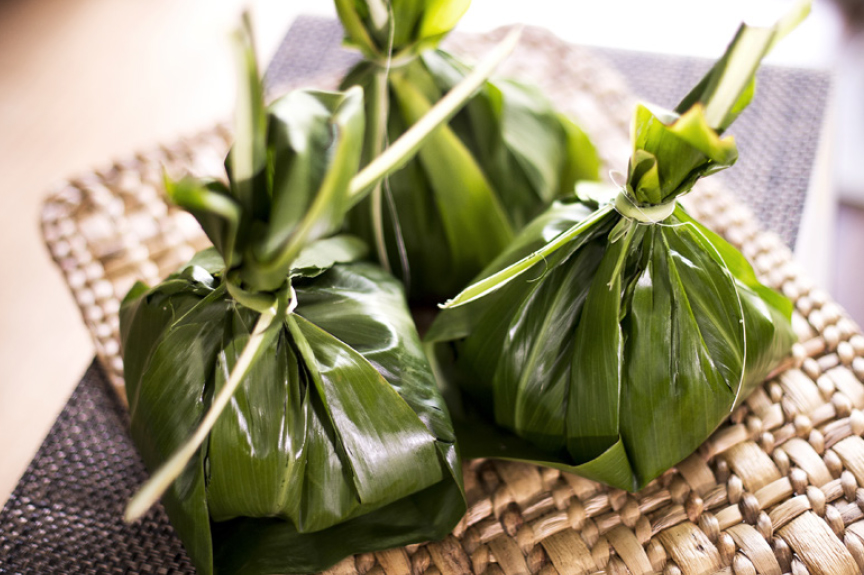

Laulau

A real tradish Hawaiian dish made of fatty pork and sometimes butterfish and/or Okinawan sweet potato, wrapped in luau leaves and steamed in ti leaves.
Ingredients
- Pork Butt - Cut into 2-inch chunks
- Pork Belly - For the fat. Cut into about 2-inch chunks
- Butterfish - Again Optional. Cut into pieces.
- Okinawan Sweet Potato - You guessed it. Optional. Cut into 2- inch chunks
- Luau Leaves
- Hawaiian Salt
- Ti Leaf - Most people nowdays aren't always wrapping in ti. Foil works just as well if you do it right. For the purpose of this recipe were using foil cause thats how we do it.
Steps
- Prep
- Throughly wash the luau leaves removing dirt or debris and any less than desirable leaves. (If not sometimes you can end up with an itchy throat.) Also a good idea to sort the leaves between big ones and small ones for assembly time.
- Cut the stems off of the leaves. Many people clean, peel and cut up the stems and put it into the laulau.
- If you are wrapping in Ti now would also be the time to wash them. If you are using foil cut them to about 14-16 inches.
- Season the pork with Hawaiian salt.
- Assembly
(This whole process is much easier if you have multiple people and can form an assembly line type situation.)
- Take about 5 to 7 luau leaves depending on the size and place them on a piece of foil. The basic idea is you want a proportional amount of leaves to fillings and can depend on preference.
- Now place whatever fillings your heart desires. Normally I do 2 to 3 decent chunks of pork and pork fat and a good chunk of butterfish and/or Okinawan sweet potato.
- Time to wrap it up. Place the leaves so the tip of the heart shape is closest to you. Fold the sides into the center then fold down from the top.
- Place your laulau on foil and wrap it up tight.
- Cooking
- Prep the steamer by adding water to the pot and placing the steamer basket on top. Most times when families make laulau they use those big double steamers. We don't play around.
- Place the laulau inside the basket but don't overcrowd them.
- Cover the steamer and steam for about 4 hours or so. The leaves should be soft and the pork should be fully cooked and tender. We usually open and eat one to check it. Wink wink.
- Serving
- Carefully remove the laulau from the steamer.
- Remove the foil from the laulau. Be careful.
- Serve the laulau hot, typically served with poi or rice. Or throw down a feast with poi, lomi salmon, kalua pig, chicken long rice and some haupia for dessert.